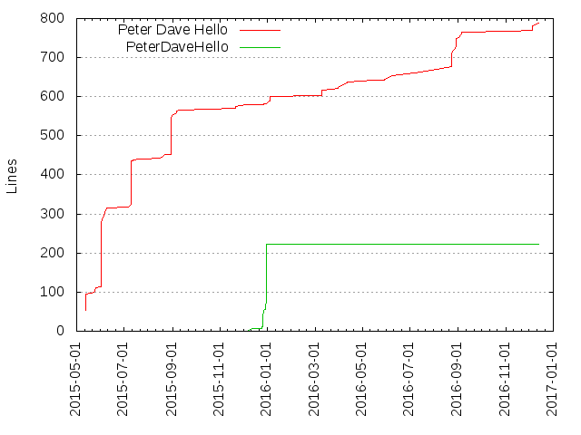
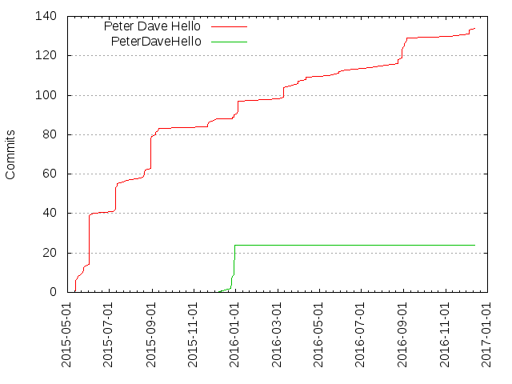

Authors
| Author | Commits (%) | + lines | - lines | First commit | Last commit | Age | Active days | # by commits |
|---|
| Peter Dave Hello | 97 (80.17%) | 601 | 328 | 2015-05-13 | 2016-01-05 | 236 days, 6:04:11 | 31 | 1 |
| PeterDaveHello | 24 (19.83%) | 222 | 152 | 2015-12-13 | 2015-12-30 | 16 days, 22:09:03 | 6 | 2 |
| Month | Author | Commits (%) | Next top 5 | Number of authors |
|---|
| 2016-01 | Peter Dave Hello | 7 (100.00% of 7) | | 1 |
| 2015-12 | PeterDaveHello | 24 (88.89% of 27) | Peter Dave Hello | 2 |
| 2015-11 | Peter Dave Hello | 4 (100.00% of 4) | | 1 |
| 2015-09 | Peter Dave Hello | 4 (100.00% of 4) | | 1 |
| 2015-08 | Peter Dave Hello | 22 (100.00% of 22) | | 1 |
| 2015-07 | Peter Dave Hello | 17 (100.00% of 17) | | 1 |
| 2015-06 | Peter Dave Hello | 27 (100.00% of 27) | | 1 |
| 2015-05 | Peter Dave Hello | 13 (100.00% of 13) | | 1 |
| Year | Author | Commits (%) | Next top 5 | Number of authors |
|---|
| 2016 | Peter Dave Hello | 7 (100.00% of 7) | | 1 |
| 2015 | Peter Dave Hello | 90 (78.95% of 114) | PeterDaveHello | 2 |
| Domains | Total (%) |
|---|
| peterdavehello.org | 116 (95.87%) |
|---|
| users.noreply.github.com | 5 (4.13%) |
|---|